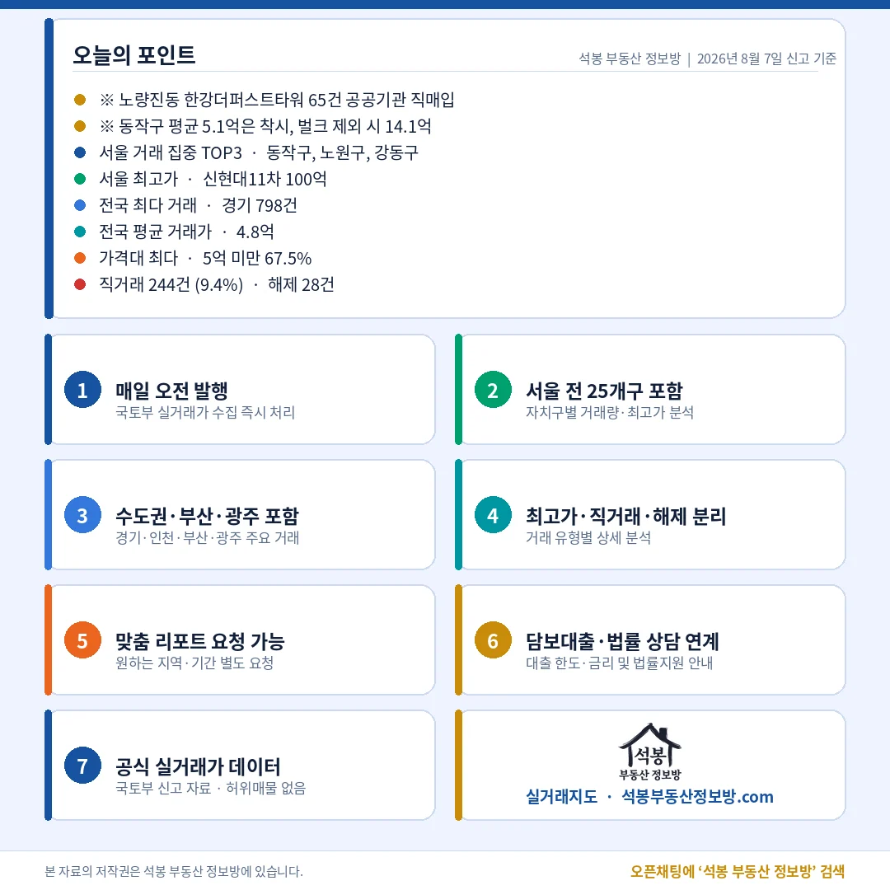

8월 7일 아파트 실거래 신고는 2,593건입니다. 다만 이 숫자는 하루치가 아닙니다. 8월 6일에 국토부 원본이 갱신되지 않아 그날 신고가 1건에 그쳤고, 그 몫이 오늘 자료에 함께 들어왔습니다. 최근 하루치가 1,100~1,600건대였으니 이틀을 합친 규모로 보시는 편이 맞습니다. 그래서 아래 표는 건수 자체보다 비중과 상단 가격대를 중심으로 읽어 주시면 좋겠습니다.
대구 상단은 힐스테이트범어 전용 84.9㎡(25.7평) 18.3억이고, 경기 1위 상록마을(우성)1은 전용 129.7㎡(39.2평) 28.2억입니다. 25.7평으로 18억을 찍은 대구 쪽 단가가 더 높습니다.
15억 위 91건 중 87건이 수도권

구간
서울
경기
그 밖
20억 이상 37건
32건
5건
0건
15억 이상 91건
66건
21건
대구 2 · 대전 1 · 충북 1
고가 구간은 여전히 서울에 몰려 있습니다. 20억을 넘긴 서른일곱 건 가운데 서른둘이 서울이었고 나머지 다섯은 분당 셋, 과천 둘이었습니다. 문턱을 15억으로 낮춰도 91건 중 87건이 수도권이라, 지방에서 나온 15억 위 거래는 대구 두 건과 대전·청주 각 한 건이 전부였습니다. 8월 3일 주간 원고에서 압구정동이 최고가 상위를 독식했다고 짚어 드렸는데, 이번에는 한 단지 안에서 100억과 77억이 사흘 간격으로 나왔습니다.
오늘 표에서 가장 조심해서 볼 숫자는 동작구 77건입니다. 자치구 1위지만 그중 65건은 공공기관이 노량진동 신축 한 곳을 7월 27일 하루에 사들인 기록입니다. 이 65건을 빼면 동작구는 12건으로 줄고 중위 거래가는 3.5억에서 15.1억으로 뜁니다. 거래량과 가격이 동시에 흔들리는 전형적인 일괄 신고라, 동작구 수요가 늘었다고 읽을 근거는 오늘 자료에 없습니다.
오늘 건수를 읽는 법 · 8월 7일 신고분에는 8월 6일 몫이 함께 담겼습니다(국토부 원본이 8월 6일에 갱신되지 않아 그날 신고가 1건이었습니다). 표의 건수는 이틀 합계라 전일 대비 증감으로 읽으면 안 되고, 비중·중위·최고가는 그대로 유효합니다. 표 보는 법 · 직거래는 중개사를 끼지 않고 당사자끼리 한 거래입니다. 면적과 평당 단가는 모두 전용면적 기준이고, 평은 ㎡를 3.3058로 나눈 값입니다. 중위 거래가는 그 지역 거래를 금액순으로 줄 세웠을 때 한가운데 값이라 평균보다 체감에 가깝습니다. 건수와 비중은 해제·취소를 포함한 전체 신고 기준이고, 중위·평균만 해제·취소 건을 빼고 계산했습니다.
원자료: 국토교통부 실거래가 공개시스템 (2026년 8월 6~7일 신고분 기준) · 편집·제작: 석봉 부동산 정보방 · 신고분은 계약일과 신고일이 다를 수 있으며 해제·취소 건이 뒤늦게 반영될 수 있습니다 · 본 자료는 정보 제공 목적이며 투자 권유가 아닙니다.